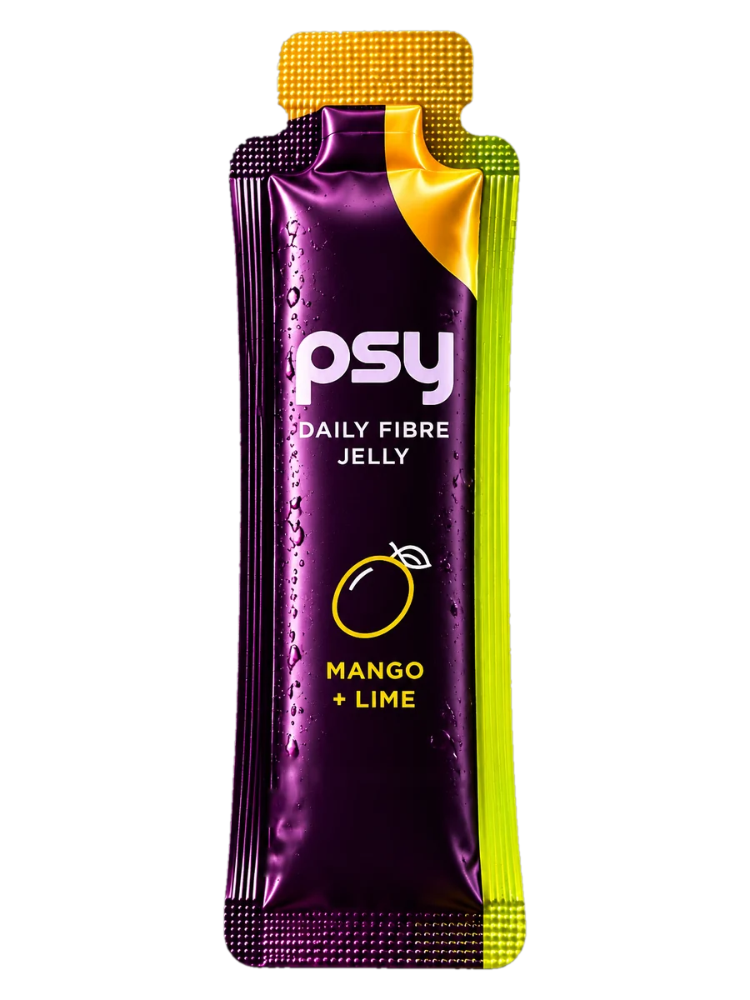
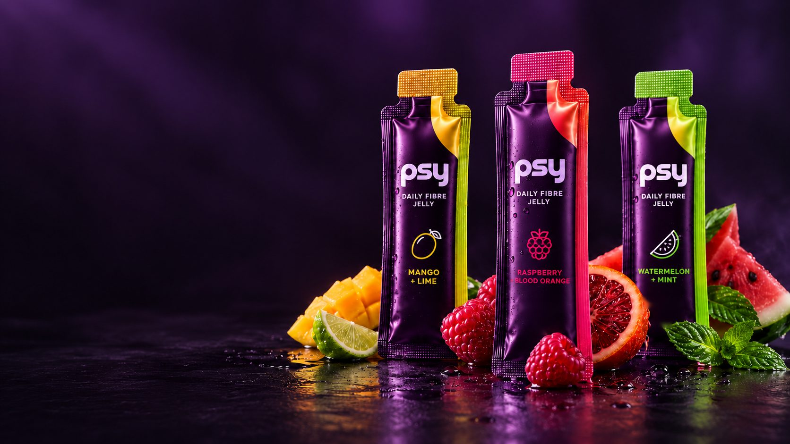
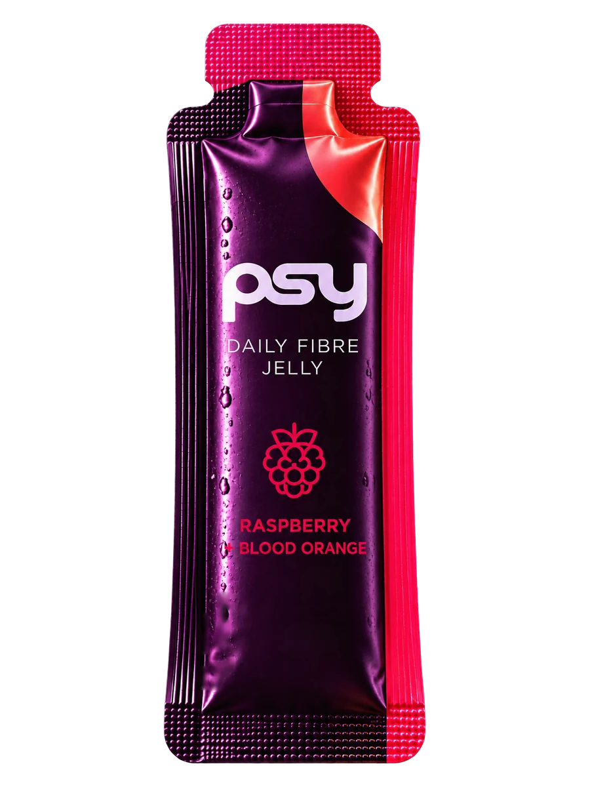
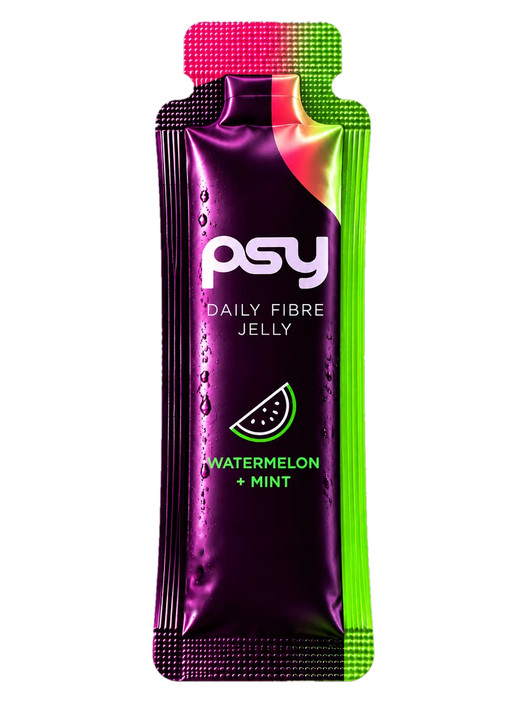

01 / 03The bright tropical one
Mango+ Lime
Round, juicy mango up front. Lime cuts in sharp before it gets heavy, and the finish stays lively.

Fig. 04aDaily fibre jelly · Pre-launch · India
A psyllium fibre jelly in a single stick. Tear it, squeeze it, done. No glass, no spoon, no prep.
Most people quit fibre at the glass,
not the idea.
Why nobody stays consistent
Fibre usually comes as a tub and a scoop. Measure it, pour it into water, drink it before it thickens. Every one of those steps is a reason to skip a day.
Then there is the texture. A glass that turns to gel halfway down is hard to look forward to, and harder to repeat tomorrow.
And it needs a kitchen: a glass, a spoon, a tap. The routine breaks the first time you travel, work late or simply leave home.
What psy is
One stick, one serving. Nothing to measure.
Pocket, bag, desk drawer. Nothing to prepare before you take it.
Five seconds, once a day. Short enough to actually keep.
Benefits of format only. No efficacy claims pending validation.
Where it sits
Every psyllium product we found asks you to prepare it. Every no-prep fibre format uses something else. psy is built for the gap.

Fig. 03b · The line
Pack renders. Final artwork follows formulation lock.
Flavour laboratory
Tasting directions are proposals. Final notes are written after the tasting panel, so they describe what is actually in the stick.
Round, juicy mango up front. Lime cuts in sharp before it gets heavy, and the finish stays lively.

Fig. 04aBright berry tartness laid over bittersweet citrus. The most intense of the three, with the sharpest finish.

Fig. 04bSoft watermelon sweetness, then a clean breath of mint. Lighter and quieter, built for the afternoon.

Fig. 04cPacks
Pricing opens after costing and pilot batch.
Ten sticks. Start the habit.
Thirty sticks. Keep it.
How to take it
Tear at the notch.
Straight from the stick. No spoon, no prep.
Follow with a full glass of water.
Psyllium is a swelling fibre. Always take with adequate water. Final serving directions, warnings and contraindications will follow formulation lock and professional review.
Spec sheet · draft 00
We publish the label before the product exists. Each line fills in when the lab confirms it, not before.
| Psyllium husk per serving | —pending |
|---|---|
| Total dietary fibre | —pending |
| Added sugar | —pending |
| Energy | —pending |
| Net quantity per stick | —pending |
| Gelling system | —pending |
| Storage | —pending |
| Shelf life | —pending |
| FSSAI category | —pending |
| Manufactured by | —pending |
Food product. Not a medicine. No treatment claims.